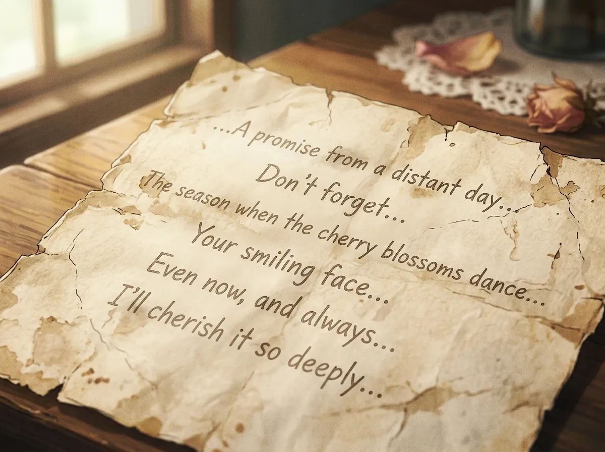
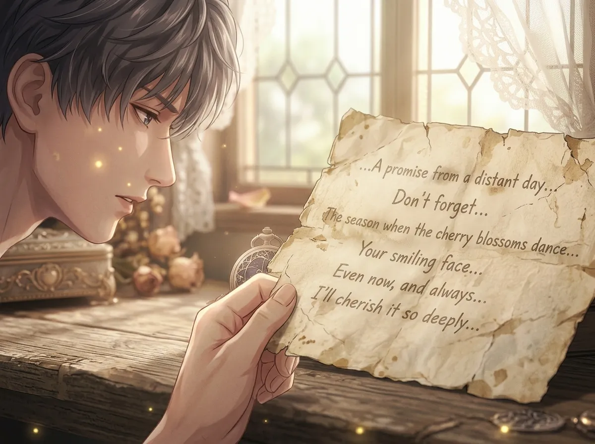
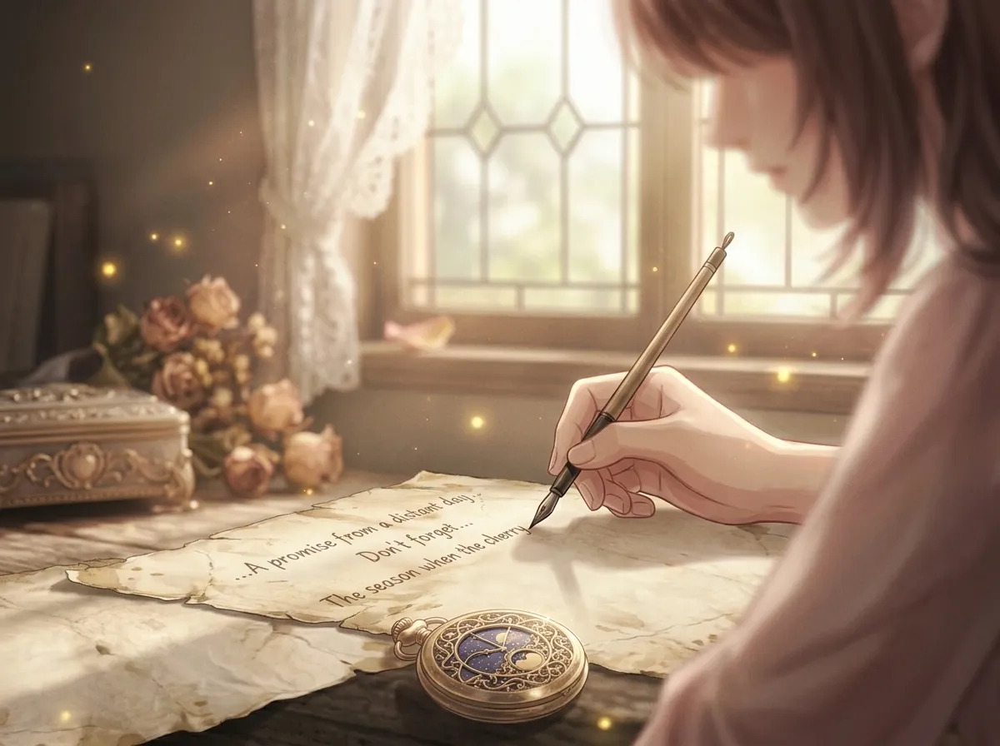
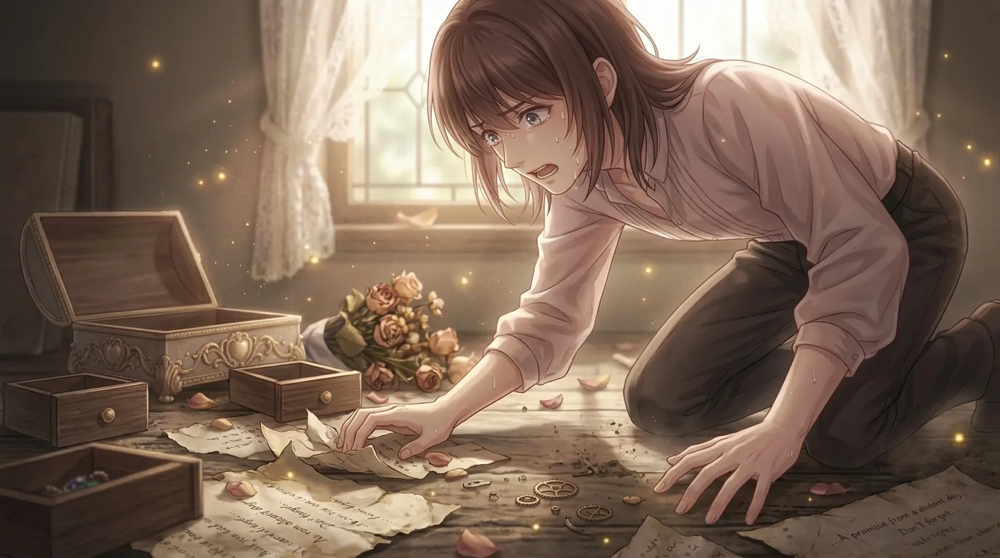
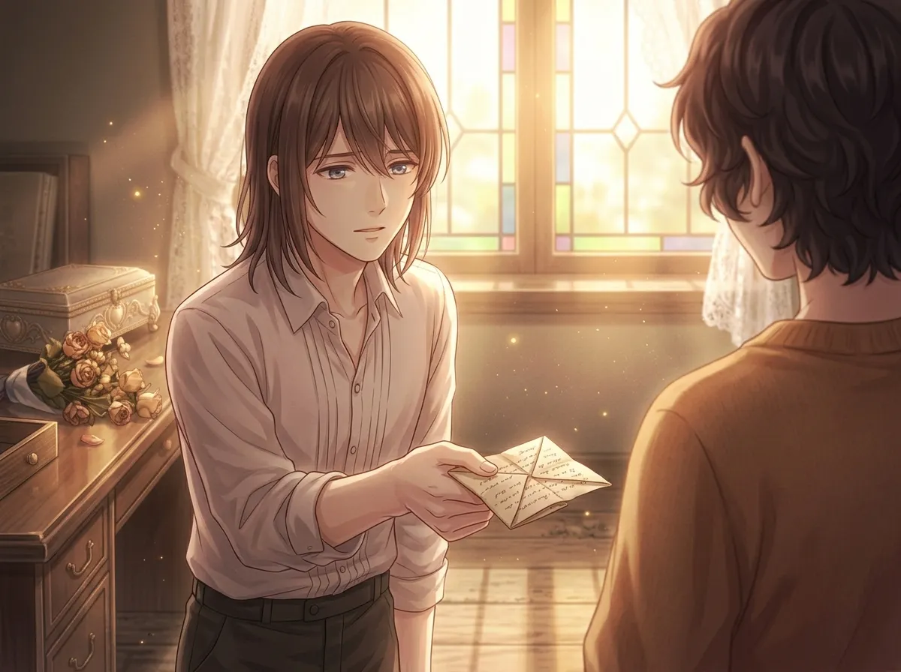

A piece of paper. Folded. Worn. Almost blank. He still carries it.
He had a note. A piece of paper. Folded into a small square. Worn soft at the edges from years of being carried.
There was writing on it. Once. Now it was almost gone. Faded. Smudged. Impossible to read.
He didn't remember who wrote it. He didn't remember when he got it. He didn't remember what it said.
He never threw it away.
He carried it with him. Everywhere. For longer than he could remember. For longer than he had been here.
This is the story of that note.

Once, there were words. Clear words. Important words. Words that someone had written for him.
Now there is only the shape of them. Faint traces. Ghost letters. The memory of something that used to be there.
He can see the outline of the letters. He can see where the pen pressed into the paper. He can see the space between the words.
But he can't read them. He can't remember what they said. He can't remember who wrote them.
He still carries the paper. He still keeps it in his pocket. He still holds it when no one is watching.
He doesn't remember what it said. He doesn't remember who wrote it. He doesn't remember when he got it.
But he remembers that it mattered. He remembers that it was important. He remembers that someone wrote it for him, and that he kept it.
He doesn't know why he keeps it. He doesn't know why he can't throw it away. He only knows that he can't.
He only knows that if he lost it, something would be missing. Something he couldn't name.

He stares at the paper. He turns it over. He holds it up to the light. He squints. He tries to remember.
The words are gone. The words have faded into nothing. The paper is almost blank.
But the feeling isn't gone. The feeling is still there. The feeling of someone writing something for him. The feeling of someone thinking about him. The feeling of someone leaving a piece of themselves with him.
He doesn't remember who it was. He doesn't remember what they wrote. But he remembers the feeling. And that is enough.
That is why he keeps it. That is why he carries it. That is why he will never throw it away.
The words are gone. The paper is blank. The memory has faded.
But the feeling remains. The feeling of being written to. The feeling of being thought of. The feeling of being important to someone.
He doesn't know who wrote it. He doesn't know what they said. But he knows that someone cared enough to write something down and give it to him.
That is why he keeps it. That is why he will always keep it.

He doesn't remember who wrote it. He doesn't remember their face. He doesn't remember their voice. He doesn't remember their name.
But he remembers that they were important. He remembers that they mattered. He remembers that they were someone he didn't want to forget.
He has forgotten everything else. He has forgotten the words. He has forgotten the date. He has forgotten the place. He has forgotten the reason.
But he remembers that they were important. And that is why he keeps the paper. That is why he carries it. That is why he will never throw it away.
He doesn't remember who wrote it. He doesn't remember when. He doesn't remember why.
But he remembers that they were important. He remembers that they were someone he didn't want to forget.
He has forgotten the words. He has forgotten the face. He has forgotten the name. But he hasn't forgotten the importance.
And that is why he keeps the paper. That is why he carries it. That is why he will never throw it away.

One day, he dropped it. He didn't notice at first. He was walking. He was thinking. He was somewhere else.
Then he reached into his pocket. It wasn't there.
He stopped. He searched his pockets. He searched his bag. He searched the ground. He searched everywhere.
He felt something he hadn't felt in a long time. A coldness in his chest. A tightness in his throat. A panic that he couldn't control.
He found it. On the ground. In a corner. Almost invisible. Almost lost forever.
He picked it up. He held it. He put it back in his pocket. He didn't let go of it for the rest of the day.
He dropped it. He didn't notice at first. Then he reached for it and it wasn't there.
He felt a panic he hadn't felt in years. A coldness in his chest. A tightness in his throat. A fear that he had lost something he couldn't get back.
He found it. He picked it up. He held it. He put it back in his pocket. He didn't let go of it for the rest of the day.
He never dropped it again. He made sure of that.

One day, she asked to see it.
She had noticed. She had noticed him reaching for his pocket. She had noticed him holding something. She had noticed him checking that it was still there.
"What is it?" she asked.
He didn't answer. He never answered. He never told anyone.
"Can I see it?" she asked.
He hesitated. He had never shown it to anyone. He had never let anyone touch it. He had never let anyone know it existed.
He took it out of his pocket. He held it out to her. He let her take it. He let her hold it. He let her look at it.
She looked at the paper. She looked at the faded words. She looked at the blank space where there used to be something.
She didn't ask what it said. She didn't ask who wrote it. She didn't ask why he kept it. She just handed it back to him.
"It's important," she said. "I can tell."
She asked to see it. He hesitated. He had never shown it to anyone. He had never let anyone touch it.
But he gave it to her. He let her hold it. He let her look at it. He let her see the blank paper where there used to be words.
She didn't ask what it said. She didn't ask who wrote it. She didn't ask why he kept it. She just looked at it, and she understood.
She understood that it was important. She understood that it mattered. She understood that it was something he couldn't let go.
He didn't know why he gave it to her. He only knew that he was glad he did.
Xavier had a note. A piece of paper. Folded. Worn. Almost blank. He carried it with him everywhere.
Once, there were words. He doesn't remember what they said. He doesn't remember who wrote them. He doesn't remember when he got it.
But he remembers that it mattered. He remembers that it was important. He remembers that someone wrote it for him, and that he kept it.
The words are gone. The paper is almost blank. But he still carries it. He still keeps it. He will never throw it away.
Because it is the only thing he has left from someone who mattered. The only thing he has left from a time he can't remember. The only thing he has left from a person he doesn't want to forget.
He will carry it forever. Even when the paper is completely blank. Even when there is nothing left to read. He will carry it. Because it is his. Because it is all he has.